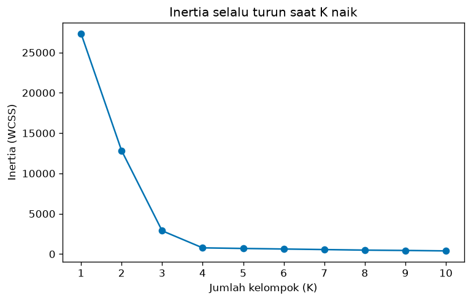
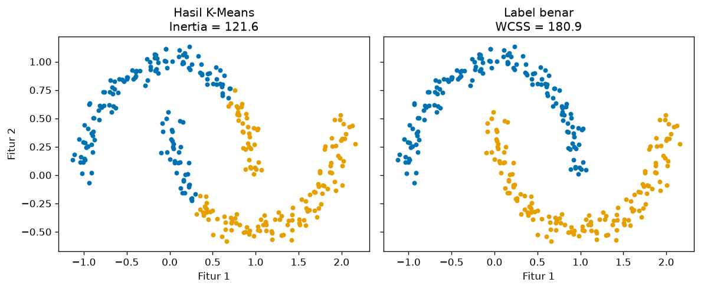

Bab 3 — Inertia and Within-Cluster Sum of Squares (WCSS)¶
Learning Objectives¶
Setelah mempelajari bab ini, kamu mampu:
- Menjelaskan apa itu Inertia dan Within-Cluster Sum of Squares (WCSS), dan hubungannya dengan K-Means.
- Menghitung WCSS secara manual, titik demi titik, dan mencocokkannya dengan
inertia_scikit-learn. - Menjelaskan mengapa WCSS memakai jarak kuadrat ke centroid.
- Menjelaskan mengapa Inertia turun (atau tetap) saat K naik, dan mengapa Inertia terendah bukan berarti hasil terbaik.
- Menjelaskan pengaruh skala dan jumlah data pada nilai Inertia mentah.
- Menjelaskan mengapa Inertia bukan metrik universal untuk semua algoritma clustering.
- Menggambar grafik Inertia terhadap K.
- Mengenali kesalahan umum saat memakai Inertia.
Introduction¶
Setelah Bab 2, kita punya gagasan: kelompok yang baik itu kompak. Bagaimana meringkas "kompak" menjadi satu angka? Jawaban paling klasik: jumlahkan kuadrat jarak setiap titik ke pusat kelompoknya. Angka ini disebut WCSS (Within-Cluster Sum of Squares), dan di scikit-learn disebut Inertia.
Kamu sudah bertemu WCSS di Level 4, Bab 2 sebagai fungsi tujuan K-Means. Di sini kita melihatnya dari sisi lain: sebagai alat penilaian. Kita menghitungnya dengan tangan, melihat bagaimana ia berubah terhadap K, dan, yang paling penting, belajar kapan ia menyesatkan.
Prasyarat
- Bab 2 Level 5 (cohesion dan jarak ke centroid).
- Level 4 Bab 2 (K-Means).
Fundamental Concepts¶
| Istilah | Arti |
|---|---|
| WCSS | Within-Cluster Sum of Squares: jumlah kuadrat jarak setiap titik ke centroid kelompoknya |
| Inertia | Nama scikit-learn untuk WCSS pada K-Means. Diakses lewat atribut inertia_ |
| Centroid | Rata-rata anggota kelompok |
| Kuadrat jarak | Jarak dikalikan dirinya sendiri. Membuat titik yang jauh dihukum lebih berat |
| Objective function | Angka yang ingin diminimalkan sebuah algoritma. Pada K-Means, itulah WCSS |
| Local minimum | Hasil terbaik di sekitar titik awal, belum tentu terbaik secara keseluruhan |
Detailed Explanation¶
Apa itu Inertia, secara intuitif¶
Bayangkan setiap titik data terhubung ke pusat kelompoknya dengan sebuah karet. Makin jauh titik dari pusat, makin tegang karetnya. Inertia adalah total ketegangan semua karet. Kelompok yang rapat membuat karet longgar (Inertia kecil), kelompok yang renggang membuat karet tegang (Inertia besar).
Mengapa memakai jarak kuadrat?¶
Dua alasan:
- Titik jauh dihukum lebih keras. Jarak 4 menjadi 16, sedangkan jarak 1 tetap 1. Satu titik yang sangat jauh menaikkan WCSS jauh lebih banyak daripada banyak titik yang sedikit jauh.
- Rata-rata adalah pusat terbaik. Untuk jumlah kuadrat jarak, titik yang meminimalkan hasilnya adalah rata-rata, yaitu centroid. Inilah sebabnya K-Means memakai rata-rata untuk memperbarui centroid (dibuktikan di Level 4, Bab 2).
Inertia dan K-Means¶
Pada K-Means, WCSS bukan sekadar skor. Ia adalah yang sedang diminimalkan algoritma. Setiap iterasi (menetapkan titik ke centroid terdekat, lalu menghitung ulang centroid) tidak pernah menaikkan WCSS. Jadi inertia_ bisa dibaca sebagai "seberapa baik K-Means berhasil meminimalkan tujuannya".
Inertia terkait erat dengan algoritma berbasis centroid
Inertia cocok untuk K-Means dan algoritma sejenis yang memakai centroid dan jarak Euclidean. Ia bukan metrik universal: DBSCAN, Hierarchical, dan Mean Shift tidak meminimalkan WCSS, dan DBSCAN bahkan tidak punya atribut inertia_. Kita membuktikannya di kode.
Hubungan K dan Inertia¶
Jika K naik, kelompok makin banyak dan makin kecil, sehingga jarak titik ke pusatnya ikut mengecil. Hasilnya:
- Dengan data dan tujuan K-Means yang sama, nilai terbaik yang mungkin untuk Inertia turun atau tetap saat K naik.
- Pada kasus ekstrem K = n (tiap titik jadi kelompok sendiri), setiap titik berimpit dengan centroid-nya, jadi Inertia = 0.
Dua catatan jujur: (1) K-Means hanya menemukan local minimum, sehingga dalam kasus langka Inertia pada K yang lebih besar bisa sedikit lebih tinggi bila titik awal buruk. Memakai n_init yang cukup mengurangi risikonya. (2) Pernyataan "turun saat K naik" berlaku untuk data yang sama dan tujuan K-Means yang standar.
Mengapa Inertia terendah tidak selalu terbaik¶
Inertia = 0 pada K = n, tetapi hasil itu tidak berguna: tidak ada kelompok yang bisa dijelaskan. Karena Inertia otomatis turun saat K naik, kamu tidak bisa memilih K dengan Inertia terkecil. Itulah alasan adanya Elbow Method (Bab 4) dan metrik lain yang tidak otomatis membaik saat K naik (Silhouette, Davies-Bouldin).
Alasan kedua: Inertia hanya mengukur kekompakan berbentuk bulat di sekitar centroid. Pada data melengkung, pembagian yang benar bentuknya bisa memiliki Inertia lebih tinggi daripada pembagian yang salah. Kita akan melihat ini pada moons.
Inertia dipengaruhi skala dan jumlah data¶
Nilai Inertia mentah tidak bisa dibandingkan begitu saja:
- Skala: jika semua fitur dikali 10, semua jarak dikali 10, jarak kuadrat dikali 100, dan Inertia ikut dikali 100.
- Jumlah data: semakin banyak titik, semakin banyak suku yang dijumlahkan. Data yang digandakan memberi Inertia sekitar dua kali lipat, padahal kualitas pengelompokannya sama.
Karena itu: bandingkan Inertia hanya pada data yang sama (skala dan jumlah sama). Untuk membandingkan antar dataset berbeda, ukuran per titik (Inertia dibagi \( n \)) sedikit membantu, tetapi skala tetap berpengaruh.
Kelebihan dan keterbatasan¶
Kelebihan
- Sederhana, cepat, dan tersedia langsung di K-Means.
- Makna jelas: total kuadrat jarak ke centroid.
- Dasar Elbow Method.
Keterbatasan
- Hanya cocok untuk objektif berbasis centroid dan jarak Euclidean.
- Otomatis turun saat K naik, sehingga tidak bisa memilih K sendirian.
- Hanya mengukur kekompakan, tidak mengukur keterpisahan antar kelompok.
- Mengasumsikan kelompok bulat dan berukuran serupa.
- Nilai mentah dipengaruhi skala dan jumlah data.
- Sensitif terhadap outlier (karena dikuadratkan).
Mathematical Foundation¶
Untuk \( K \) kelompok \( C_1, \dots, C_K \) dengan centroid \( \mu_k \):
Cara membacanya, dari dalam ke luar:
- \( \lVert \mathbf{x}_i - \mu_k \rVert^2 \): jarak kuadrat titik \( \mathbf{x}_i \) ke centroid kelompoknya. Dengan Euclidean, ini sama dengan \( \sum_j (x_{ij} - \mu_{kj})^2 \): kuadratkan selisih tiap fitur, lalu jumlahkan. Tidak perlu akar.
- \( \sum_{\mathbf{x}_i \in C_k} \): jumlahkan untuk semua titik di kelompok \( k \).
- \( \sum_{k=1}^{K} \): jumlahkan untuk semua kelompok.
Centroid adalah rata-rata anggota:
Pengaruh skala (bukti singkat)¶
Jika semua titik dikali \( c \), centroid juga dikali \( c \), dan selisih \( \mathbf{x}_i - \mu_k \) dikali \( c \). Kuadratnya dikali \( c^2 \), sehingga
Untuk \( c = 10 \), faktornya 100, sesuai hasil kode di bawah.
Perhitungan manual¶
Pakai enam titik dari Bab 2. Kelompok 0: \( (1,1),\ (2,1),\ (1,2) \) dengan centroid \( (1{,}333;\ 1{,}333) \).
| Titik | Selisih ke centroid | Jarak kuadrat |
|---|---|---|
| \( (1,1) \) | \( (-0{,}333;\ -0{,}333) \) | \( 0{,}111 + 0{,}111 = 0{,}222 \) |
| \( (2,1) \) | \( (0{,}667;\ -0{,}333) \) | \( 0{,}444 + 0{,}111 = 0{,}556 \) |
| \( (1,2) \) | \( (-0{,}333;\ 0{,}667) \) | \( 0{,}111 + 0{,}444 = 0{,}556 \) |
Jumlah kelompok 0: \( 0{,}222 + 0{,}556 + 0{,}556 = 1{,}333 \).
Kelompok 1 adalah salinan yang digeser (centroid \( (6{,}333;\ 5{,}333) \)), sehingga jumlahnya juga \( 1{,}333 \). Total:
Pecahan eksaknya: \( \tfrac{2}{9} + \tfrac{5}{9} + \tfrac{5}{9} = \tfrac{12}{9} \) per kelompok, atau \( \tfrac{24}{9} = 2{,}667 \) total.
Python Implementation¶
Skrip lengkapnya ada di examples/level-5/03_inertia_and_wcss.py, dan notebook-nya di notebooks/level-5/03-inertia-and-wcss.ipynb. Setiap potongan kode diikuti penjelasannya.
Konteks masalah: menghitung WCSS manual, mencocokkannya dengan inertia_, lalu melihat bagaimana Inertia berubah terhadap K, skala, jumlah data, dan algoritma.
Dataset:
X_tiny: enam titik dari Bab 2.make_blobs: 400 titik, 4 gerombol (cluster_std=1.0).make_moons: untuk menunjukkan Inertia yang menyesatkan.- Mall Customers.
Pustaka: NumPy, pandas, Matplotlib, scikit-learn.
Bagian A — Siapkan alat¶
import numpy as np
import pandas as pd
import matplotlib.pyplot as plt
from sklearn.cluster import DBSCAN, KMeans
from sklearn.datasets import make_blobs, make_moons
from sklearn.preprocessing import StandardScaler
Penjelasan: KMeans menghitung Inertia. DBSCAN kita impor untuk membuktikan bahwa ia tidak punya Inertia. Sisanya sudah dikenal.
Bagian B — Enam titik¶
X_tiny = np.array(
[
[1, 1], [2, 1], [1, 2], # kelompok 0
[6, 5], [7, 5], [6, 6], # kelompok 1
],
dtype=float,
)
labels_tiny = np.array([0, 0, 0, 1, 1, 1])
Penjelasan: data dan label yang sama dengan Bab 2. Label kita tentukan sendiri, sehingga kita bisa menghitung WCSS tanpa algoritma.
Bagian C — WCSS dihitung titik demi titik¶
total = 0.0
for k in (0, 1):
members = X_tiny[labels_tiny == k]
centroid = members.mean(axis=0)
print(f"Kelompok {k}, centroid = {centroid.round(3).tolist()}")
for point in members:
sq_dist = ((point - centroid) ** 2).sum() # jarak kuadrat titik ke centroid
total += sq_dist
print(f" titik {point.tolist()} -> jarak kuadrat = {sq_dist:.3f}")
print(f"WCSS manual = {total:.3f}")
Penjelasan baris demi baris:
total = 0.0adalah penampung jumlah. Kita mengisinya sambil berjalan.for k in (0, 1):mengulang untuk tiap kelompok.members = X_tiny[labels_tiny == k]memilih titik milik kelompokk.centroid = members.mean(axis=0)menghitung rata-rata per kolom.- Perulangan dalam
for point in members:mengambil satu titik.(point - centroid) ** 2mengurangkan lalu mengkuadratkan tiap fitur, dan.sum()menjumlahkannya: itulah jarak kuadrat. total += sq_distmenambahkannya ke jumlah.f"{sq_dist:.3f}"mencetak tiga desimal.
Bagian D — Mencocokkan dengan scikit-learn¶
km_tiny = KMeans(n_clusters=2, n_init=10, random_state=42).fit(X_tiny)
print("Label K-Means :", km_tiny.labels_.tolist())
print(f"inertia_ scikit-learn = {km_tiny.inertia_:.3f}")
Penjelasan: KMeans(n_clusters=2, ...).fit(X_tiny) melatih K-Means. km_tiny.inertia_ adalah Inertia hasil pelatihan. Perhatikan: tanda garis bawah di akhir (inertia_) adalah konvensi scikit-learn untuk atribut yang baru ada setelah fit. km_tiny.labels_ adalah label hasil K-Means. Kita memeriksa apakah ia sama dengan label buatan tangan kita.
Bagian E — WCSS sebagai fungsi¶
def wcss(X, labels):
"""WCSS: jumlah kuadrat jarak setiap titik ke centroid kelompoknya."""
total = 0.0
for k in np.unique(labels):
members = X[labels == k]
centroid = members.mean(axis=0)
total += ((members - centroid) ** 2).sum()
return total
print(f"wcss(X_tiny, labels_tiny) = {wcss(X_tiny, labels_tiny):.3f}")
Penjelasan: hitungan yang sama dibungkus dalam fungsi wcss(X, labels) yang menerima label apa pun, bukan hanya label K-Means. np.unique(labels) mendaftar kelompok. Fungsi ini kita pakai lagi pada data moons untuk menilai label benar.
Bagian F — Inertia untuk K = 1 sampai 10¶
X_blobs, _ = make_blobs(n_samples=400, centers=4, cluster_std=1.0, random_state=42)
k_values = list(range(1, 11))
inertias = []
for k in k_values:
model = KMeans(n_clusters=k, n_init=10, random_state=42).fit(X_blobs)
inertias.append(model.inertia_)
table = pd.DataFrame({"K": k_values, "Inertia": inertias})
table["Penurunan"] = -table["Inertia"].diff()
print(table.round(2).to_string(index=False))
print("Inertia tidak pernah naik saat K naik?", bool(np.all(np.diff(inertias) <= 1e-9)))
Penjelasan:
make_blobs(n_samples=400, centers=4, ...)membuat 400 titik dengan empat gerombol. Tanda_menampung label bawaan yang tidak kita pakai.- Untuk tiap K, kita melatih K-Means dan menyimpan
inertia_. table["Inertia"].diff()menghitung selisih antar baris. Kita beri tanda minus agar berarti penurunan (nilai positif).np.diff(inertias) <= 1e-9memeriksa apakah tiap langkah tidak naik.1e-9memberi toleransi pembulatan komputer.np.all(...)mengecek semuanya..to_string(index=False)mencetak tabel tanpa nomor baris.
# K sama dengan jumlah titik: tiap titik menjadi kelompoknya sendiri
km_all = KMeans(n_clusters=len(X_tiny), n_init=10, random_state=42).fit(X_tiny)
print(f"K = {len(X_tiny)} pada {len(X_tiny)} titik -> Inertia = {km_all.inertia_:.3f}")
Penjelasan: pada enam titik, K-Means dengan K = 6 menjadikan tiap titik kelompoknya sendiri.
palette = ["#0072B2", "#E69F00", "#009E73", "#CC79A7", "#D55E00", "#56B4E9"]
fig, ax = plt.subplots(figsize=(6.5, 4.2))
ax.plot(k_values, inertias, marker="o", color=palette[0])
ax.set_xlabel("Jumlah kelompok (K)")
ax.set_ylabel("Inertia (WCSS)")
ax.set_title("Inertia selalu turun saat K naik")
ax.set_xticks(k_values)
plt.tight_layout()
plt.show()
Penjelasan: ax.plot(..., marker="o") menggambar garis dengan titik bulat di tiap K. ax.set_xticks(k_values) menampilkan tiap bilangan K di sumbu horizontal.
Bagian G — Skala dan jumlah data¶
inertia_base = KMeans(n_clusters=4, n_init=10, random_state=42).fit(X_blobs).inertia_
# 1) Skala data dikali 10: semua jarak ikut dikali 10, jarak kuadrat dikali 100
inertia_x10 = KMeans(n_clusters=4, n_init=10, random_state=42).fit(X_blobs * 10).inertia_
# 2) Jumlah data digandakan (data yang sama dua kali): Inertia ikut naik
X_double = np.vstack([X_blobs, X_blobs])
inertia_double = KMeans(n_clusters=4, n_init=10, random_state=42).fit(X_double).inertia_
print(f"Inertia data asli : {inertia_base:.2f}")
print(f"Inertia data x 10 : {inertia_x10:.2f} (rasio {inertia_x10 / inertia_base:.1f})")
print(f"Inertia data digandakan : {inertia_double:.2f} (rasio {inertia_double / inertia_base:.2f})")
print(f"Inertia per titik (asli) : {inertia_base / len(X_blobs):.3f}")
print(f"Inertia per titik (ganda) : {inertia_double / len(X_double):.3f}")
Penjelasan:
X_blobs * 10mengalikan semua koordinat dengan 10.np.vstack([X_blobs, X_blobs])menumpuk data yang sama dua kali (800 baris). Bentuk kelompoknya sama persis, hanya jumlahnya dua kali lipat.- Terakhir kita cetak rasio dan Inertia per titik (
/ len(...)).
Bagian H — Inertia bukan untuk semua algoritma¶
dbscan = DBSCAN(eps=0.7, min_samples=5).fit(X_blobs)
print("KMeans punya inertia_ :", hasattr(KMeans(n_clusters=2).fit(X_blobs), "inertia_"))
print("DBSCAN punya inertia_ :", hasattr(dbscan, "inertia_"))
Penjelasan: hasattr(objek, "nama") bernilai True jika objek punya atribut itu. K-Means punya inertia_, DBSCAN tidak. DBSCAN tidak meminimalkan jarak ke centroid, jadi konsep Inertia bukan bagian dari modelnya.
Bagian I — Inertia yang menyesatkan pada moons¶
X_moons, y_moons = make_moons(n_samples=300, noise=0.06, random_state=42)
km_moons = KMeans(n_clusters=2, n_init=10, random_state=42).fit(X_moons)
print(f"Inertia K-Means (label salah bentuk) : {km_moons.inertia_:.2f}")
print(f"WCSS label benar (dua bulan utuh) : {wcss(X_moons, y_moons):.2f}")
fig, axes = plt.subplots(1, 2, figsize=(10, 4.2), sharey=True)
panels = [
(km_moons.labels_, f"Hasil K-Means\nInertia = {km_moons.inertia_:.1f}"),
(y_moons, f"Label benar\nWCSS = {wcss(X_moons, y_moons):.1f}"),
]
for ax, (labels, title) in zip(axes, panels):
for k in range(2):
ax.scatter(X_moons[labels == k, 0], X_moons[labels == k, 1], s=14, color=palette[k])
ax.set_title(title)
ax.set_xlabel("Fitur 1")
axes[0].set_ylabel("Fitur 2")
plt.tight_layout()
plt.show()
Penjelasan: kita membandingkan Inertia hasil K-Means dengan WCSS label benar (y_moons). Label benar hanya dipakai untuk dihitung, tidak untuk melatih K-Means.
Bagian J — Mall Customers¶
df = pd.read_csv("data/mall_customers.csv")
features = ["Annual Income (k$)", "Spending Score (1-100)"]
X_mall = StandardScaler().fit_transform(df[features])
mall_inertia = [KMeans(n_clusters=k, n_init=10, random_state=42).fit(X_mall).inertia_ for k in range(1, 11)]
mall_table = pd.DataFrame({"K": range(1, 11), "Inertia": mall_inertia})
mall_table["Penurunan"] = -mall_table["Inertia"].diff()
print(mall_table.round(2).to_string(index=False))
Penjelasan: list comprehension [... for k in range(1, 11)] menjalankan K-Means untuk K = 1 sampai 10 dalam satu baris. Hasil tabel ini dipakai lagi di Bab 4.
Code Explanation¶
| Bagian kode | Peran |
|---|---|
((point - centroid) ** 2).sum() |
Jarak kuadrat satu titik ke centroid |
KMeans(...).fit(X).inertia_ |
Inertia hasil K-Means |
wcss(X, labels) |
WCSS untuk label apa pun |
table["Inertia"].diff() |
Selisih Inertia antar K |
X * 10 |
Menguji pengaruh skala |
np.vstack([X, X]) |
Menguji pengaruh jumlah data |
hasattr(model, "inertia_") |
Memeriksa apakah model punya Inertia |
Proses pelatihan vs penilaian
KMeans(...).fit(X) adalah pelatihan (K-Means meminimalkan WCSS). wcss(X, labels) adalah penilaian (hanya menghitung, tidak mengubah label). Keduanya menghitung hal yang sama pada K-Means, tetapi fungsi wcss bisa dipakai pada label dari algoritma apa pun.
How to Run¶
Dari folder utama proyek (setelah mengaktifkan lingkungan virtual):
Skrip mencetak output ke terminal dan menyimpan dua gambar ke docs/assets/level-5/. Notebook interaktifnya:
Output di bawah berasal dari eksekusi nyata dengan Python 3.14, NumPy 2.5.4, pandas 3.1.1, scikit-learn 1.9.1, dan Matplotlib 3.11.2.
Expected Output¶
Kelompok 0, centroid = [1.333, 1.333]
titik [1.0, 1.0] -> jarak kuadrat = 0.222
titik [2.0, 1.0] -> jarak kuadrat = 0.556
titik [1.0, 2.0] -> jarak kuadrat = 0.556
Kelompok 1, centroid = [6.333, 5.333]
titik [6.0, 5.0] -> jarak kuadrat = 0.222
titik [7.0, 5.0] -> jarak kuadrat = 0.556
titik [6.0, 6.0] -> jarak kuadrat = 0.556
WCSS manual = 2.667
Label K-Means : [0, 0, 0, 1, 1, 1]
inertia_ scikit-learn = 2.667
wcss(X_tiny, labels_tiny) = 2.667
K Inertia Penurunan
1 27364.56 NaN
2 12840.70 14523.86
3 2886.53 9954.17
4 766.52 2120.01
5 691.25 75.27
6 622.11 69.14
7 554.17 67.93
8 484.52 69.65
9 443.20 41.33
10 388.60 54.59
Inertia tidak pernah naik saat K naik? True
K = 6 pada 6 titik -> Inertia = 0.000
[gambar disimpan: docs/assets/level-5/03-inertia-vs-k.png]
Inertia data asli : 766.52
Inertia data x 10 : 76651.83 (rasio 100.0)
Inertia data digandakan : 1533.04 (rasio 2.00)
Inertia per titik (asli) : 1.916
Inertia per titik (ganda) : 1.916
KMeans punya inertia_ : True
DBSCAN punya inertia_ : False
Inertia K-Means (label salah bentuk) : 121.63
WCSS label benar (dua bulan utuh) : 180.93
[gambar disimpan: docs/assets/level-5/03-moons-inertia.png]
K Inertia Penurunan
1 400.00 NaN
2 269.69 130.31
3 157.70 111.99
4 108.92 48.78
5 65.57 43.35
6 55.06 10.51
7 44.86 10.19
8 37.23 7.64
9 32.39 4.84
10 29.98 2.41
Gambar yang dihasilkan:


Interpretasi output¶
1. Hitungan manual cocok. Jarak kuadrat per titik: 0,222; 0,556; 0,556 untuk kelompok 0, dan nilai yang sama untuk kelompok 1. WCSS manual 2,667, sama dengan inertia_ scikit-learn (2,667) dan dengan fungsi wcss kita. Label K-Means \( [0, 0, 0, 1, 1, 1] \) juga sama dengan label buatan tangan. Nomor kelompok kebetulan sama. Ingat bahwa nomor bisa tertukar tanpa mengubah hasil.
2. Inertia turun saat K naik. Pada 400 titik, Inertia: 27364,56 (K = 1), 12840,70, 2886,53, lalu 766,52 (K = 4). Setelah K = 4 penurunan jadi kecil: 75,27; 69,14; 67,93; 69,65; 41,33; 54,59. Pemeriksaan kode menyatakan tidak pernah naik (True). Penurunan dari K = 3 ke K = 4 adalah 2120,01, jauh lebih besar daripada langkah-langkah sesudahnya. Pola ini menjadi dasar Elbow Method (Bab 4).
Setelah K = 4 Inertia tetap turun
Inertia terus turun sampai K = 10 (388,60), padahal data hanya punya empat gerombol. Penurunan itu bukan karena kualitas, melainkan karena kelompok dipecah-pecah. Inertia yang lebih rendah tidak berarti pembagian lebih baik.
3. K sama dengan jumlah titik. K = 6 pada enam titik menghasilkan Inertia 0,000, tetapi tidak ada gunanya.
4. Skala dan jumlah data. Inertia data asli 766,52. Setelah semua koordinat dikali 10, Inertia menjadi 76651,83, tepat 100,0 kali (sesuai \( c^2 \)). Data yang digandakan menghasilkan 1533,04, yaitu 2,00 kali. Inertia per titik tetap 1,916 pada keduanya, karena kualitas pengelompokannya memang sama. Inilah mengapa Inertia mentah tidak boleh dibandingkan antar dataset berbeda.
5. Hanya untuk objektif centroid. KMeans punya inertia_ (True), DBSCAN tidak (False).
6. Moons. Inertia hasil K-Means yang memotong bentuk bulan hanya 121,63, sedangkan label benar mendapat WCSS 180,93, lebih tinggi. Jadi nilai Inertia lebih rendah di sini menyukai pembagian yang salah bentuk. Alasannya: WCSS mengukur kedekatan ke centroid, dan bulan sabit bukan bentuk yang rapat di sekitar centroid.
7. Mall Customers. Inertia K = 1 adalah tepat 400,00. Ini bukan kebetulan: data sudah distandarkan (setiap fitur variansnya 1), 200 titik dan 2 fitur memberi \( 200 \times 2 = 400 \). Selanjutnya: 269,69; 157,70; 108,92; 65,57 (K = 5); lalu 55,06; 44,86; 37,23; 32,39; 29,98. Penurunan dari K = 4 ke 5 sebesar 43,35, dan dari K = 5 ke 6 hanya 10,51. Penurunan yang melandai setelah K = 5 sejalan dengan pilihan K = 5 di Level 4. Angka-angka ini sama dengan yang tercatat di Level 4 Bab 2.
Practical Examples¶
Menilai seberapa baik K-Means berjalan. inertia_ memberi tahu seberapa kecil total jarak kuadrat yang dicapai. Dengan n_init berbeda atau inisialisasi berbeda, hasil dengan Inertia terkecil dipilih otomatis oleh scikit-learn.
Bahan Elbow Method. Mencatat Inertia untuk K = 1, 2, 3, ... lalu menggambarnya adalah langkah pertama memilih K (Bab 4).
Kompresi warna gambar. Inertia pada K-Means untuk warna piksel menunjukkan seberapa besar informasi warna yang hilang. Makin kecil Inertia, makin mirip gambar hasil dengan aslinya.
Memantau kualitas dari waktu ke waktu. Jika data baru dikelompokkan dengan model lama, Inertia per titik yang melonjak bisa menandakan data berubah dan model perlu dilatih ulang.
Hands-on Exercises¶
- Hitung manual WCSS data satu dimensi \( 1, 2, 6, 7, 8 \) dengan label \( [0, 0, 1, 1, 1] \).
- Jalankan K-Means pada data tersebut dengan K = 1, 2, dan 3. Berapa Inertia-nya?
- Ubah
cluster_std=1.0menjadi2.0padaX_blobs. Berapa Inertia dengan K = 4? Mengapa lebih besar? - Standarkan
X_blobsdenganStandardScaler. Berapa Inertia untuk K = 1 dan K = 4? - Hitung Inertia per titik untuk Mall Customers pada K = 5.
- Mengapa Inertia untuk K = 10 tidak bisa dipakai untuk menyimpulkan bahwa 10 kelompok lebih baik daripada 4?
- Mengapa kita tidak boleh membandingkan Inertia data A (skala ribuan) dengan Inertia data B (skala satuan)?
Jawaban
Hasil nomor 2 sampai 5 berasal dari eksekusi nyata.
- Centroid \( \mu_0 = \frac{1+2}{2} = 1{,}5 \) dan \( \mu_1 = \frac{6+7+8}{3} = 7 \). Jarak kuadrat kelompok 0: \( 0{,}25 + 0{,}25 \). Kelompok 1: \( 1 + 0 + 1 \). Total 2,5.
- K = 1: 38,8. K = 2: 2,5 (sama dengan hitungan manual). K = 3: 1,0. Turun dari 38,8 ke 2,5 besar, dari 2,5 ke 1,0 kecil.
- Inertia dengan K = 4 menjadi 2932,33 (sebelumnya 766,52). Sebaran yang lebih lebar membuat titik lebih jauh dari centroid, dan jarak dikuadratkan.
- Setelah distandarkan, K = 1 memberi 800,00 (400 titik × 2 fitur) dan K = 4 memberi 23,08. Angka berubah drastis walau bentuk data sama. Skala mengubah nilai Inertia.
- \( 65{,}57 / 200 = \) 0,328 per titik (K = 5).
- Inertia otomatis turun saat K naik. K = 10 hanya memecah empat gerombol menjadi potongan yang lebih kecil. Untuk menilai, pakai metrik yang tidak otomatis membaik, atau lihat titik tempat penurunan melandai (Bab 4).
- Inertia dikali \( c^2 \) saat skala dikali \( c \). Data berskala ribuan akan menghasilkan Inertia yang sangat besar hanya karena skalanya, bukan karena pengelompokannya lebih buruk.
Troubleshooting¶
Masalah teknis¶
| Masalah | Penyebab | Solusi |
|---|---|---|
AttributeError: 'DBSCAN' object has no attribute 'inertia_' |
DBSCAN tidak meminimalkan WCSS | Pakai metrik lain (Bab 5 sampai 7) atau hitung wcss() sendiri dengan hati-hati |
AttributeError: ... has no attribute 'inertia_' pada KMeans |
Memanggil inertia_ sebelum fit |
Panggil fit terlebih dahulu |
| Inertia pada K besar sedikit lebih tinggi dari K kecil | K-Means terjebak local minimum | Naikkan n_init, pakai random_state tetap |
| Angka berbeda dari output di bab | Versi pustaka atau seed berbeda | Pakai random_state=42 dan bandingkan polanya |
ValueError: n_samples=... should be >= n_clusters=... |
K lebih besar dari jumlah data | Turunkan K |
Kesalahan umum¶
- Memilih K dengan Inertia terendah. Inertia selalu turun saat K naik. Cari titik tempat penurunan melandai (Bab 4), dan padukan dengan metrik lain.
- Membandingkan Inertia antar dataset berbeda. Skala dan jumlah data mengubah angkanya.
- Lupa menyamakan skala fitur. Inertia (dan K-Means) akan didominasi fitur berskala besar.
- Memakai Inertia untuk DBSCAN atau Hierarchical seolah itu ukuran universal. Algoritma itu tidak meminimalkannya.
- Menganggap Inertia rendah berarti benar. Pada moons, pembagian yang salah bentuk punya Inertia lebih rendah.
- Mengabaikan outlier. Karena dikuadratkan, satu outlier bisa menaikkan Inertia secara berlebihan.
- Mengira Inertia mengukur keterpisahan antar kelompok. Ia hanya mengukur kekompakan di dalam kelompok.
Summary¶
- Inertia (WCSS) adalah jumlah kuadrat jarak setiap titik ke centroid kelompoknya. Pada K-Means, inilah yang diminimalkan algoritma.
- Dihitung manual pada enam titik: 2,667, sama dengan
inertia_scikit-learn. - Pada data yang sama dan tujuan K-Means standar, Inertia turun atau tetap saat K naik, dan mencapai 0 pada K = n. Karena itu Inertia terendah bukan cara memilih K.
- Nilai mentah dipengaruhi skala (dikali \( c^2 \)) dan jumlah data. Pada data kita, skala × 10 memberi rasio 100,0 dan data digandakan memberi rasio 2,00.
- Inertia bukan metrik universal:
DBSCANtidak punyainertia_, dan pada moons label benar memiliki WCSS (180,93) lebih tinggi daripada K-Means yang salah bentuk (121,63). - Pada Mall Customers, penurunan Inertia melandai setelah K = 5 (43,35 lalu 10,51).
Bab berikutnya: Bab 4 memakai grafik Inertia terhadap K untuk Elbow Method: mencari titik tempat tambahan kelompok tidak lagi banyak membantu.
References¶
- Lloyd, S. (1982). Least squares quantization in PCM. IEEE Transactions on Information Theory, 28(2), 129–137.
- Hastie, T., Tibshirani, R., & Friedman, J. (2009). The Elements of Statistical Learning (2nd ed.), Bab 14.3.6: K-means. Springer.
- Tan, P.-N., Steinbach, M., & Kumar, V. (2019). Introduction to Data Mining (2nd ed.), Bab 7.5. Pearson.
- Scikit-learn documentation: K-means: Inertia dan
KMeans.